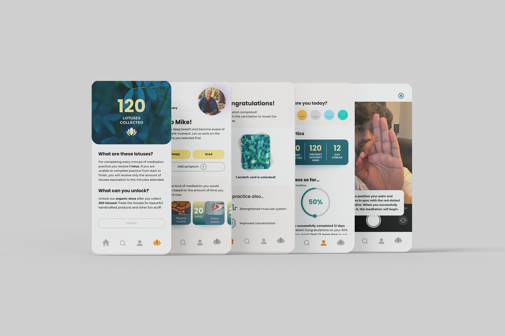
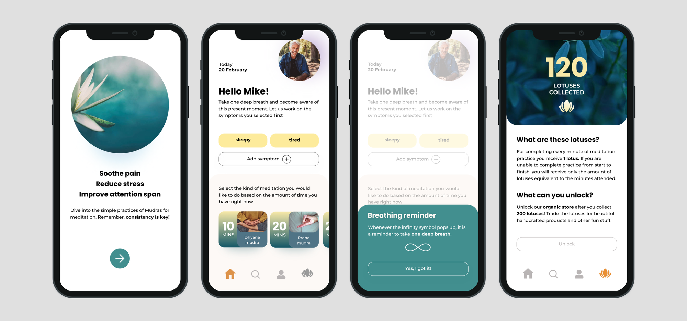
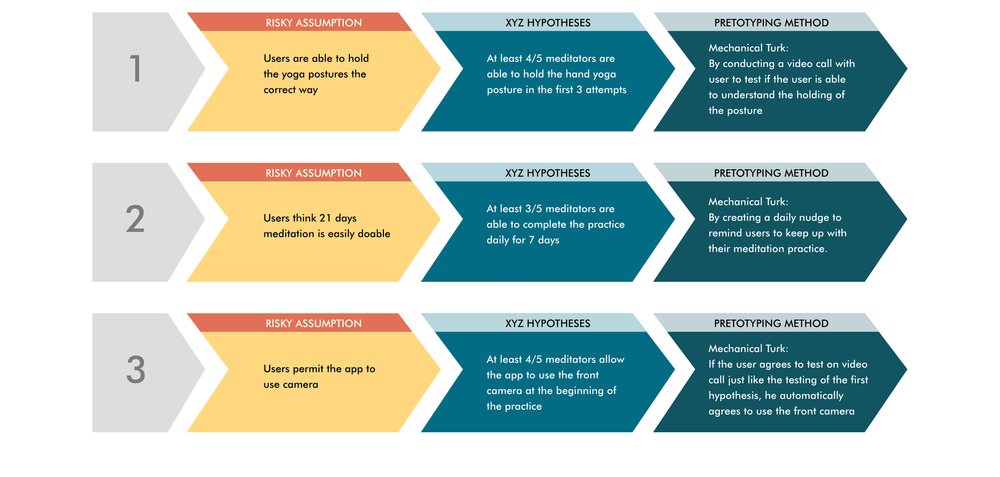
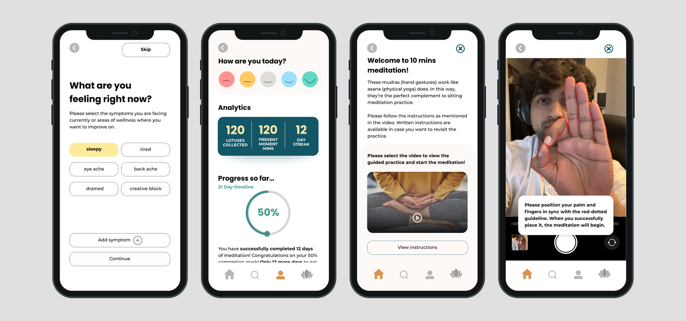
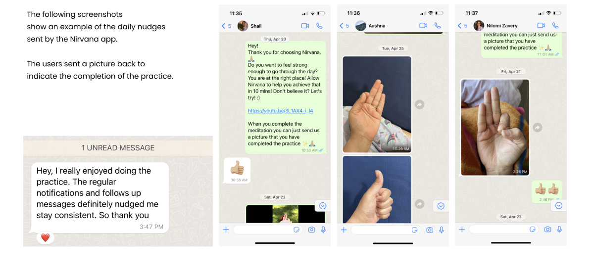

SUMEET GOKHALE
SUMEET GOKHALE
Nirvana
Behavioral infrastructure for habit formation
Prototype Link
Nirvana — a retention system for daily meditation.
Meditation apps don’t fail because of content. They fail because of consistency. Nirvana was designed to solve a behavioral problem:
How do you convert intention into daily action?
The problem
- Most meditation platforms assume users will return because they feel better.
- Drop-off typically happens within the first week. Motivation fades. Habits don’t form.
- The real problem wasn’t content discovery. It was behavioral reinforcement.
My roles
- Research
- Behavioral hypothesis framing
- Rapid prototyping
- UI Design
I designed a system that increases short-term consistency to enable long-term habit formation.

Reinforcement mechanics
Instead of adding more meditation options, I focused on reinforcement mechanics. Three core behavioral levers were introduced:
Time-Adaptive Entry
Users select meditation length based on available time, reducing friction at the decision point.
Variable Reward System
Lotus-based reward accumulation for every completed minute. Progress unlocks access to a store, reinforcing continuation.
Accountability Nudges
Daily prompts delivered through direct messaging. Users confirm completion with image responses.
One of the core assumptions I validated through pretotyping was whether users across different cultural contexts could accurately understand and replicate Indian mudras (hand gestures) used as guided meditation anchors within the app.
Hypothesis testing (video)

Impact & business outcomes
Based on prototype testing and modeled retention benchmarks from habit-formation products, the system demonstrated strong early behavioral traction.
Increase in 7-day retention. Daily nudges and accountability loops reduced early drop-off.
Increase in session completion rate. Time-adaptive entry lowered friction at the decision point, increasing likelihood of session start and finish.
Improvement in habit consistency over first week. Reward accumulation and visible progress strengthened behavioral reinforcement.

Output
Identified early user drop-off as the primary risk and addressed it through a system focused on reinforcement and accountability rather than additional features. Testing showed improved short-term consistency in user behavior, with strong indicators toward increased retention and reduced churn.
Established a validated framework that directly connects user actions to measurable business outcomes, creating a scalable approach for improving engagement.